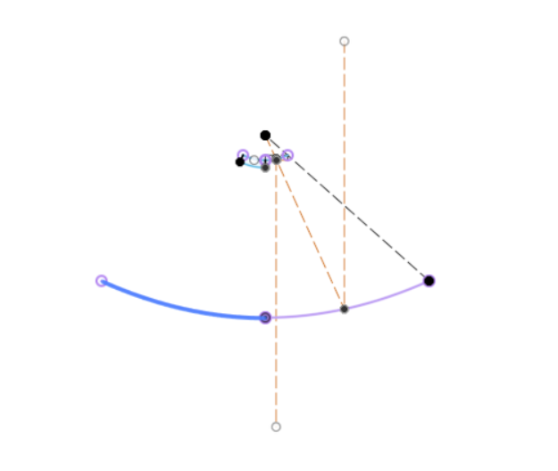
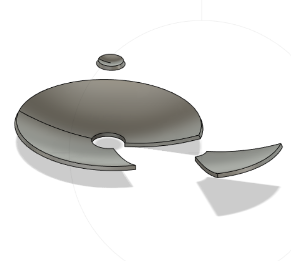

### Week 10
##### _Monday, November 7_
We split up into our groups for the final prototype. Xavier, Noah, and I are in the group charged with machining the reflector.
We opened up Fusion360 and began discussing ways we could improve the reflector and change the dimensions into what the class was expecting. Early on, we unanimously agreed to scrap the Fresnel reflector template and use a purely parabolic model for a couple reasons: one, it would make machining the final parts much easier, and two, it would also be much easier to handle in an already touchy Fusion360 environment.
##### _Wednesday, November 9_
We immediately reconvened into our group and began CAD work on a parabolic model created by Justin. We were able to change the dimensions of the parabola to fit our desired ones, and we made some good progress on the CAD body. We also discussed plans for manufacturing the reflector, and we landed on thermo-forming.
Here is the 2D CAD model, made by Justin:

At the end of the class, Xavier had finished a beginning design for the main reflector and a concave secondary reflector with our desired dimensions. The main reflector was then cut into 6 equal portions that would fit into the thermo-forming machine in building 3.
